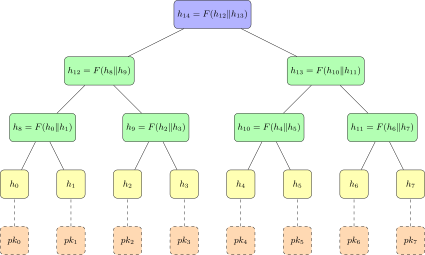
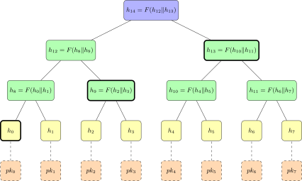
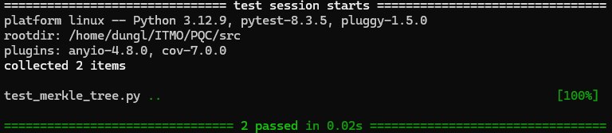
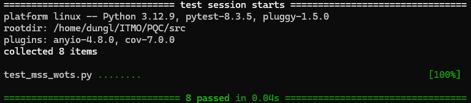
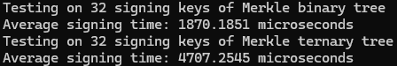

8. Hash-based cryptography¶
8.1. Цель работы¶
Целью работы является исследование криптографической схемы "подпись MSS на основе W-OTS", которая описана.
Для достижения поставленной цели необходимо решить следующие задачи:
Выполнить описание примитивов и базовых принципов работы криптосистемы.
Выполнить формальное и словесное описание алгоритмов криптосистемы:
для схемы асимметричного шифрования: алгоритм выбора и инициализации системных параметров, алгоритм генерации ключевой пары, алгоритм шифрования, алгоритм расшифрования;
для схемы подписи: алгоритм выбора и инициализации системных параметров, алгоритм генерации ключевой пары, алгоритм формирования подписи, алгоритм проверки подписи.
для схемы выработки общего секретного ключа: алгоритм выбора и инициализации системных параметров, алгоритм выработки передаваемых по открытому каналу значений, алгоритм вычисления общего ключа на основе полученных по открытому каналу значений.
Выполнить формальное и словесное описание необходимых дополнительных алгоритмов, например, алгоритма декодирования для криптосистемы Classic McEliece или алгоритм поиска обратного элемента в кольце многочленов для NTRU.
Привести обоснование стойкости криптосистемы. Представить описание вычислительно сложных задач, к решению которых сводится криптостойкость системы.
Выделить преимущества и недостатки рассматриваемой криптосистемы.
Подобрать, исходя из заданных вариантом, значения полного набора системных параметров. Обосновать выбор.
Выполнить следующие практические задания:
Выполнить реализацию криптосистемы с набором значений системных параметров, сформированным при выполнении п.6.
Продемонстрировать корректность работы программной реализации. Представить в отчете скриншоты как правильной работы алгоритмов при корректном наборе значений системных параметров, так и неправильной при некорректных.
Провести серию экспериментов определить среднее время выполнения алгоритмов и объем используемой памяти.
Ответить на дополнительный вопрос или выполнить дополнительное задание варианта (при наличии).
8.2. Описание примитивов и базовых принципов работы криптосистемы¶
8.2.1. One-time signature (OTS)¶
Первая схема подписи на основе хэша была опубликована в 1979 году Лэмпортом. Идея автора заключалась в выборочном раскрытии прообраза в виде выходных значений односторонней функции \(f\), в зависимости от количества битов подписываемого сообщения.
Чтобы подписать сообщение длиной \(n\) бит, необходимо сгенерировать \(n\) пар случайных значений \((s_{i, 0}, s_{i, 1})\), чтобы получить последовательность \((s_{1,0}, s_{1, 1}, \ldots, s_{n, 0}, s_{n, 1})\). Эта последовательность будет использоваться в качестве секретного ключа.
Открытый ключ генерируется путём применения \(f\) к каждому элементу закрытого ключа, чтобы получить последовательность \((p_{1, 0}, p_{1, 1}, \ldots, p_{n, 0}, p_{n, 1})\), где \(p_{i, j} = f(s_{i, j})\), \(1 \leqslant i \leqslant n\), \(0 \leqslant j \leqslant 1\).
Чтобы подписать сообщение \(M\) длиной \(n\) бит, мы представим его в виде последовательности бит \((m_1, m_2, \ldots, m_n)\). После генерации пары закрытого и открытого ключей, \(M\) можно подписать, выборочно раскрывая части закрытого ключа. Для \(i\)-го бита \(M\) мы раскрываем \(s_{i, 0}\), если \(m_i = 0\), и \(s_{i, 1}\), если \(m_i = 1\). Подпись представляет собой последовательность \((\sigma_1, \sigma_2, \ldots, \sigma_n)\), где \(\sigma_i = s_{i, m_i}\) для всех \(1 \leqslant i \leqslant n\).
Для проверки подписи мы используем открытый ключ. Нам нужно применить \(f\) к подписи, \((f(\sigma_1), f(\sigma_2), \ldots, f(\sigma_n))\), и сравнить \(f(\sigma_i) \stackrel{?}{=} p_{i, m_i}\) для всех \(1 \leqslant i \leqslant n\).
8.2.2. Merkle signature scheme (MSS)¶
В 1982 года Меркл описал структуру, позволяющую связать несколько подписей с одним открытым ключом. Мы называем это деревом Меркла или хеш-деревом, а результат - схемой цифровой подписи Меркла (Merkle signature scheme, MSS).
Для создания дерева Меркла подписывающая сторона создаёт \(N\) пар одноразовых ключей, где \(N\) - степень числа \(2\). С помощью хеш-функции \(F\) все \(N\) открытых ключей «сжимаются» в один ключ путём построения двоичного дерева, начиная с листовых узлов.
Процесс построения двоичного дерева выглядит следующим образом:
для каждого открытого ключа \(pk_i\) подписывающая сторона создаёт листовой узел \(h_i = F(pk_i)\);
затем значение родительского узла получается путём вычисления \(F\) конкатенации двух дочерних узлов. Предположим, что родительский узел имеет два дочерних узла: \(h_i\) и \(h_{i+1}\), тогда значение родительского узла равно \(F(h_i \Vert h_{i+1})\). Продолжим, пока не будет найден корень дерева, который и будет многоразовым открытым ключом.
Подписывающая сторона создаёт подпись MSS, выбирая ранее неиспользованный конечный узел и создавая подпись с использованием базовой схемы OTS. Пример дерева Меркла представлен на рисунке Дерева Меркла с N=8 листовыми узлами.

Hình 8.1 Дерева Меркла с \(N=8\) листовыми узлами¶
Чтобы доказать, что пара ключей, используемая для подписи, является частью дерева Меркла с долгосрочным открытым ключом в качестве корневого узла, подписывающая сторона объединяет путь аутентификации с подписью, содержащий индекс используемого конечного узла и кратчайший список узлов, позволяющий проверяющей стороне вычислить корневой узел дерева.
Пример пути аутентификации показан на рисунке Путь аутентификации для листового узла h_1. Предположим, что подписывающая сторона использует открытый ключ \(pk_1\) для генерации подписи, тогда путь включает индекс \(1\). Чтобы позволить проверяющей стороне вычислить корень дерева, подписывающая сторона должна также отправить \(h_0\), \(h_9\) и \(h_{13}\). Таким образом, подписывающая сторона публикует \((sig, pk_1, 1, h_0, h_9, h_{13})\). Проверяющая сторона может вычислить \(h_1 = F(pk_1)\), \(h_8 = F(h_0 \Vert h_1)\), \(h_{12} = F(h_0 \Vert h_9)\) и, наконец, \(h_{14} = F(h_{12} \Vert h_{13})\). Поскольку многоразовый открытый ключ известен заранее, проверяющая сторона сравнивает с ним \(h_{14}\).

Hình 8.2 Путь аутентификации для листового узла \(h_1\)¶
8.2.3. Winternitz one-time signature (W-OTS)¶
Одноразовая подпись Винтерица (Winternitz one-time signature, W-OTS) была предложена в 1979 году Винтерицем и независимо от Лэмпорта. Она предназначена для уменьшения размера ключа и подписи по сравнению с оригинальной схемой Лэмпорта, за счёт увеличения времени генерации ключа и подписания.
W-OTS использует параметр \(w\), называемый параметром Винтерица, который определяет количество бит, обрабатываемых одновременно. Вместо того, чтобы подписывать каждый бит сообщения отдельно, как в схеме Лэмпорта, W-OTS группирует биты сообщения в блоки по \(w\) бит и подписывает каждый блок с помощью цепочки хеш-функций.
Обозначение \(f^t(x) = \underbrace{f(f(\ldots(x)))}_{t \ \text{раз}}\). Обычно используется следующее соглашение: \(f^0(x) = x\).
Закрытый ключ W-OTS представляет собой список псевдослучайно сгенерированных значений. Соответствующие значения открытого ключа \(pk_i\) получаются путём итерации \(f\) для каждого значения закрытого ключа \(s_i\) \(w-1\) раз, то есть \(pk_i = f^{w-1}(s_i)\).
Параметр Винтерница обычно является степенью числа 2, то есть \(w = 2^t\).
Чтобы создать подпись, подписывающая сторона раскрывает промежуточные значения:
предположим, что биты сообщения \(t\) в десятичной форме представляют собой целое число \(u\), тогда подписывающая сторона раскрывает \(f^u(s_i)\) как подписи;
проверяющая сторона проверяет, вычисляя \(f\), добавляя \(w - 1 - u\) раз, чтобы получить \(f^{w - 1 - u}(f^u(s_i)) = f^{w - 1}(s_i)\).
В описанной выше схеме есть изъян: если злоумышленник знает значение подписи \(f^u(s_i)\), он может легко вычислить \(f^{u+1}(s_i) = f(f^u(s_i))\), тем самым сгенерировав новую действительную подпись. Для решения этой проблемы мы используем контрольную сумму. При изменении подписи контрольная сумма становится недействительной.
8.3. Формальное и словесное описание алгоритмов криптосистемы¶
8.3.1. Алгоритм подписи OTS Лэмпорта¶
Сначала мы устанавливаем процедуры для OTS Лэмпорта.
Общие параметры OTS включают в себя:
\(N\) - количество бит каждого подписываемого сообщения;
\(F\) - односторонняя функция \(\{ 0, 1 \}^k \to \{ 0, 1 \}^k\) с фиксированным целевым числом \(k\).
Таким образом, \(k\) - это количество бит каждого элемента секретного ключа \(s_{i, j}\), а также открытого ключа \(p_{i, j}\), где \(1 \leqslant i \leqslant N\) и \(0 \leqslant j \leqslant 1\).
Обозначение \(\overset{\$}{\gets} \{ 0, 1 \}\) представляет собой случайный выбор битовой строки длиной \(k\).
\(\mathsf{Lambort.KeyGen}()\) - генерация пары ключа OTS Лэмпорта
Input \(N, k, F\)
Output: \((sk, pk)\), где \(sk\) - секретный ключ, \(pk\) - открытый ключ
For \(i \gets 1\) to \(N\)
For \(j \gets 0\) to \(1\)
\(s_{i, j} \overset{\$}{\gets} \{ 0, 1 \}^k\)
\(p_{i, j} \gets F(s_{i, j})\)
\(sk \gets (s_{1, 0}, s_{1, 1}, \ldots, s_{N, 0}, s_{N, 1})\)
\(pk \gets (p_{1, 0}, p_{1, 1}, \ldots, p_{N, 0}, p_{N, 1})\)
Return \((sk, pk)\)
\(\mathsf{Lambort.Sign(M, sk)}\) - создание подписи OTS Лэмпорта
Input: сообщение \(M\), \(sk = (s_{1, 0}, s_{1, 1}, \ldots, s_{N, 0}, s_{N, 1})\), \(F\)
Output: \(\sigma\) - подпись \(M = (m_1, m_2, \ldots, m_N)\), где \(m_i \in \{ 0, 1 \}\)
For \(i \gets 1\) to \(N\) - \(\sigma_i \gets s_{i, m_i}\)
\(\sigma \gets (\sigma_1, \sigma_2, \ldots, \sigma_N)\)
Return \(\sigma\)
\(\mathsf{Lambort.Verify(M, \sigma, pk)}\) - проверка подписи OTS Лэмпорта
Input: сообщение \(M\), подпись \(\sigma = (\sigma_1, \sigma_2, \ldots, \sigma_N)\), \(pk = (p_{1, 0}, p_{1, 1}, \ldots, p_{N, 0}, p_{N, 1})\), \(F\)
Output: true или false
\(M = (m_1, m_2, \ldots, m_N)\), где \(m_i \in \{ 0, 1 \}\)
For \(i \gets 1\) to \(N\)
If \(F(\sigma_i) \neq p_{i, m_i}\)
Return false
Return true
8.3.2. Алгоритм подписи W-OTS¶
Для схемы цифровой подписи W-OTS с параметром Винтерница \(w\) нам понадобятся следующие дополнительные параметры:
\(l_1 = \left\lceil \dfrac{N}{\log_2 w} \right\rceil\) - максимальное количество фрагментов, которое может содержать сообщение. Например, если сообщение содержит 128 бит и \(w = 16 = 2^4\), мы можем разделить сообщение на 32 фрагмента по 4 бита в каждом;
\(l_2 = \left\lfloor \dfrac{\log_2(l_1 (w - 1))}{\log_2 w} \right\rfloor + 1\) - максимальная длина контрольной суммы.
Таким образом, параметры W-OTS включают в себя:
\(l = l_1 + l_2\) - количество элементов подписи;
\(F\) - односторонняя функция от \(\{ 0, 1 \}^k \to \{ 0, 1 \}^k\), где \(k\) - фиксированное целое число;
\(w\) - параметр Винтерница.
\(\mathsf{WOTS.KeyGen}()\) - генерация пары ключа W-OTS
Input: \(l, k, w, F\)
Output: \((sk, pk)\), где \(sk\) - секретный ключ, \(pk\) - открытый ключ
For \(i \gets 1\) to \(l\)
\(s_i \overset{\$}{\gets} \{ 0, 1 \}^k\)
\(pk_i \gets f^{w-1}(s_i)\)
\(sk \gets (s_1, s_2, \ldots, s_l)\)
\(pk \gets (pk_1, pk_2, \ldots, pk_l)\)
Return \((sk, pk)\)
\(\mathsf{WOTS.Sign}(M, sk)\) - создание подписи W-OTS
Input: сообщение \(M\), \(sk = (s_1, s_2, \ldots, s_l)\), \(w\), \(l_1\), \(l_2\), \(F\)
Output: \(\sigma\) - подпись
\(M = (m_1, m_2, \ldots, m_{l_1})\), где \(m_i \in \{ 0, 1, \ldots, w - 1 \}\)
For \(i \gets 1\) to \(l_1\)
\(\sigma_i \gets F^{m_i}(s_i)\)
\(c \gets \sum\limits_{i=1}^{l_1} (w - 1 - m_i)\)
\(c = (c_1, c_2, \ldots, c_{l_2})\), где \(c_i \in \{ 0, 1, \ldots, w - 1\}\)
For \(i \gets 1\) to \(l_2\)
\(\sigma_{l_1 + i} \gets F^{c_i}(s_{l_1 + i})\)
\(\sigma \gets (\sigma_1, \sigma_2, \ldots, \sigma_l)\)
Return \(\sigma\)
\(\mathsf{WOTS.Verify}(M, \sigma, pk)\) - проверка подписи W-OTS
Input: сообщение \(M\), подпись \(\sigma = (\sigma_1, \sigma_2, \ldots, \sigma_l)\), \(pk = (pk_1, pk_2, \ldots, pk_l)\), \(w\), \(l_1\), \(l_2\), \(F\)
Output: true или false
\(M = (m_1, m_2, \ldots, m_{l_1})\), где \(m_i \in \{ 0, 1, \ldots, w - 1 \}\)
For \(i \gets 1\) to \(l_1\)
If \(F^{w - 1 - m_i}(\sigma_i) \neq pk_i\)
Return false
\(c \gets \sum\limits_{i=1}^{l_1} (w - 1 - m_i)\)
\(c = (c_1, c_2, \ldots, c_{l_2})\), где \(c_i \in \{ 0, 1, \ldots, w - 1\}\)
For \(i \gets 1\) to \(l_2\)
If \(F^{w - 1 - c_i}(\sigma_{l_1 + i}) \neq pk_{l_1 + i}\)
Return false
Return true
\(\mathsf{WOTS.RecoverPK}(M, \sigma)\) - восстановление открытого ключа W-OTS из подписи
Input: сообщение \(M\), подпись \(\sigma = (\sigma_1, \sigma_2, \ldots, \sigma_l)\), \(w\), \(l_1\), \(l_2\), \(F\)
Output: \(pk\) - открытый ключ
\(M = (m_1, m_2, \ldots, m_{l_1})\), где \(m_i \in \{ 0, 1, \ldots, w - 1 \}\)
For \(i \gets 1\) to \(l_1\)
\(pk_i \gets F^{w - 1 - m_i}(\sigma_i)\)
\(c \gets \sum\limits_{i=1}^{l_1} (w - 1 - m_i)\)
\(c = (c_1, c_2, \ldots, c_{l_2})\), где \(c_i \in \{ 0, 1, \ldots, w - 1\}\)
For \(i \gets 1\) to \(l_2\)
\(pk_{l_1 + i} \gets F^{w - 1 - c_i}(\sigma_{l_1 + i})\)
\(pk \gets (pk_1, pk_2, \ldots, pk_l)\)
Return \(pk\)
\(\mathsf{WOTS.RecoverPK}(sk)\) - восстановление открытого ключа W-OTS из секретного ключа
Input: \(sk = (s_1, s_2, \ldots, s_l)\), \(w\), \(l\), \(F\)
Output: \(pk\) - открытый ключ
For \(i \gets 1\) to \(l\)
\(pk_i \gets F^{w - 1}(s_i)\)
\(pk \gets (pk_1, pk_2, \ldots, pk_l)\)
Return \(pk\)
8.3.3. Алгоритм построения дерева Меркла¶
Для построения дерева Меркла нам понадобятся следующие параметры:
\(n = 2^h\) - количество листовых узлов, где \(h\) - высота дерева;
\(H\) - хэш-функция от \(\{ 0, 1 \}^k \times \{ 0, 1 \}^k \to \{ 0, 1 \}^k\), где \(k\) - фиксированное целое число.
Сначала мы генерируем \(p\) пар одноразовых ключей OTS в виде \((sk_i, pk_i)\), где \(i \in \{ 0, 1, \ldots, 2^{h-1} \}\). Затем мы используем их для построения двоичного дерева высотой \(h\).
Листовые узлы - это открытые ключи \(pk_i\). Дерево Меркла строится снизу вверх, листовые узлы имеют высоту 0. Каждый родительский узел строится путем вычисления хеш-значения \(H\) от его дочерних узлов. Другими словами, если обозначение \(\mathsf{node}_{i, j}\) является \(j\)-м узлом на высоте \(i\), то узел \(\mathsf{node}_{i+1, j}\) вычисляется по формуле
где \(0 \leqslant j < 2^{h - i - 1}\) и \(0 \leqslant i < h\).
Алгоритм построения дерева Меркла представлен в алгоритме \mathsf{MerkleTree.Build}(\text{leaf}_0, \text{leaf}_1, \ldots, \text{leaf}_{2^{h-1} - 1}) - построение дерева Меркла.
\(\mathsf{MerkleTree.Build}(\text{leaf}_0, \text{leaf}_1, \ldots, \text{leaf}_{2^{h-1} - 1})\) - построение дерева Меркла
Input: \(h, H\)
Output: дерево Меркла с корневым узлом \(\mathsf{node}_{h, 0}\)
For \(j \gets 0\) to \(2^{h-1} - 1\)
\(\mathsf{node}_{0, j} \gets \text{leaf}_j\)
For \(i \gets 0\) to \(h - 1\)
For \(j \gets 0\) to \(2^{h - i - 1} - 1\)
\(\mathsf{node}_{i+1, j} \gets H(\mathsf{node}_{i, 2j}, \mathsf{node}_{i, 2j+1})\)
Return \(\mathsf{node}_{i, j}\) для всех \(0 \leqslant i \leqslant h\) и \(0 \leqslant j < 2^{h - i}\)
8.3.4. Алгоритм криптосистемы подписи MSS на основе W-OTS¶
\(\mathsf{MSS.KeyGen}()\) - генерация ключа MSS на основе W-OTS
Input: \(h\) -- высота дерева
Output: \(SK = (sk_0, \ldots, sk_{2^h-1})\) - секретные ключи, \(PK\) - открытый ключ
For \(i \gets 0\) to \(2^{h} - 1\)
\((sk_i, pk_i) \gets \mathsf{WOTS.KeyGen}()\)
\(\mathsf{node}_{i, j} \gets \mathsf{MerkleTree.Build}(pk_0, pk_1, \ldots, pk_{2^{h} - 1})\)
\(PK \gets \mathsf{node}_{h, 0}\)
\(SK \gets (sk_0, sk_1, \ldots, sk_{2^h - 1})\)
Return \(SK, PK\)
\(\mathsf{MSS.Sign}(M, idx, SK)\) - создание подписи MSS на основе W-OTS
Input: сообщение \(M\), \(SK = (sk_0, \ldots, sk_{2^h-1})\) - секретные ключи
Output: \(\sigma\) - подпись
If \(idx \geqslant 2^h - 1\)
Return error
\(\sigma_{wots} \gets \mathsf{WOTS.Sign}(M, sk_{idx})\)
For \(j \gets 0\) to \(2^h - 1\)
\(pk_j \gets WOTS.RecoverPK(sk_j)\)
\(\mathsf{node}_{i, j} \gets \mathsf{MerkleTree.Build}(pk_0, pk_1, \ldots, pk_{2^{h} - 1})\)
\(j \gets idx\)
For \(i \gets 0\) to \(h - 1\)
If \(j\) четно: \(\text{auth}_i \gets \mathsf{node}_{i, j + 1}\)
Else: \(\text{auth}_i \gets \mathsf{node}_{i, j - 1}\)
\(j \gets \lfloor j / 2 \rfloor\)
\(\sigma \gets (idx, pk_{idx}, \sigma_{wots}, \text{auth}_0, \text{auth}_1, \ldots, \text{auth}_{h-1})\)
Return \(\sigma\)
\(\mathsf{MSS.Verify}(M, \sigma, PK)\) - проверка подписи MSS на основе W-OTS
Input: сообщение \(M\), подпись \(\sigma = (idx, pk_{idx}, \sigma_{wots}, \text{auth}_0, \text{auth}_1, \ldots, \text{auth}_{h-1})\), \(PK\) - открытый ключ
Output: true или false
\(\sigma \gets (idx, pk_{idx}, \sigma_{ots}, \text{auth}_0, \text{auth}_1, \ldots, \text{auth}_{h-1})\)
If{\(\mathsf{WOTS.Verify}(M, \sigma_{ots}, pk_{idx})\) = false}
Return false
\(\mathsf{node}_0 \gets pk_{idx}\)
\(j \gets idx\)
For \(i \gets 0\) to \(h - 1\)
If \(j\) четно: \(\mathsf{node}_{i+1} \gets H(\mathsf{node}_i, \text{auth}_i)\)
Else: \(\mathsf{node}_{i+1} \gets H(\text{auth}_i, \mathsf{node}_i)\)
\(j \gets \lfloor j / 2 \rfloor\)
If \(\mathsf{node}_h \neq PK\)
Return false
Return true
8.4. Формальное и словесное описание необходимых дополнительных алгоритмов¶
8.5. Обоснование стойкости криптосистемы¶
Схема MSS на основе W-OTS использует криптографические хеш-функции для генерации ключей и подписи сообщений, что делает её устойчивой к атакам с пересчётом секретного ключа. Кроме того, использование W-OTS позволяет подписывать несколько сообщений, избегая повторения ключей. Это помогает избежать уязвимостей, возникающих при многократном использовании одного и того же ключа (например, оракулы).
Здесь используется хеш-функция SHA256. Это безопасная хеш-функция, определённая в стандарте США.
8.6. Преимущества и недостатки рассматриваемой криптосистемы¶
Преимущества схемы подписи MSS на основе W-OTS включают в себя:
она позволяет подписывать несколько сообщений одним и тем же открытым ключом, являющимся корнем дерева Меркла;
простота реализации: многие библиотеки в языках программирования уже поддерживают криптографические хеш-функции, и написание программ для деревьев Меркла несложно;
значение секретного ключа, которое необходимо сгенерировать, меньше, чем для OTS Лампорта, поскольку мы разбиваем сообщение на сегменты по \(t\) бит; чем больше \(t\), тем меньше требуется \(s_i\).
Недостатки вышеописанной схемы:
Каждый секретный ключ W-OTS \(sk_i\) состоит из \(l\) компонентов, как описано в разделе Алгоритм подписи W-OTS. Каждый компонент имеет длину 256 бит, что соответствует длине результата хэширования, поэтому общая длина каждого секретного ключа составляет \(256 l / 8 = 32 l\) байт.
Каждый секретный ключ \(sk_i\) сопровождается открытым ключом \(pk_i\) той же длины. Мы можем либо вычислить \(pk_i\) и сохранить его для многократного использования, либо использовать алгоритм \mathsf{WOTS.RecoverPK}(sk) - восстановление открытого ключа W-OTS из секретного ключа для его восстановления. Первый вариант требует больше памяти, а второй - больше вычислений.
Если дерево Меркла содержит \(n\) листовых узлов, то для хранения всех листьев дерева потребуется всего \(32 l n\) байт. Причина хранения всех секретных ключей заключается в том, чтобы выбрать ключ, который не использовался при подписании новых сообщений. Обычно \(n\) - это степень двойки для оптимизации построения дерева Меркла, но это потребует большого объёма памяти.
Общий открытый ключ (корень дерева Меркла) будет подписывать \(n\) различных сообщений, соответствующих \(n\) конечным узлам. Число \(n\) должно быть достаточно большим для обеспечения практичности, поскольку в других классических алгоритмах (Эль-Гамаля, ECC) каждый открытый ключ позволяет подписывать множество различных сообщений.
8.7. Подбор значений полного набора системных параметров¶
Значения системных параметров: \(n = 32\), \(w = 8\).
8.8. Практические задания¶
8.8.1. Реализация криптосистемы с заданным набором значений системных параметров¶
Код реализации криптосистемы представлен в приложении Реализация криптосистемы.
Код реализации криптосистемы на основе троичного дерева (ДОПОЛНИТЕЛЬНОЕ ЗАДАНИЕ) представлен в приложении Реализация криптосистемы на основе троичного дерева.
8.8.2. Демонстрация корректности работы программной реализации¶
Для демонстрации корректности программной реализации была проведена серия экспериментов с использованием pytest.
Результаты тестирования дерева Меркла (и двоичное, и троичное) показаны на рисунке Проверка корректности работы дерева Меркла, где каждый тест строит дерево Меркла и проверяет узлы в нём вручную. Тестовая программа представлена в приложении Код для тестирования дерева Меркла.

Hình 8.3 Проверка корректности работы дерева Меркла¶
Результаты тестирования корректности схемы MSS на основе W-OTS (и двоичное, и троичное дерева Меркла) показаны на рисунке Проверка корректности схемы MSS на основе W-OTS, где каждый тест строит дерево Меркла и проверяет узлы в нём вручную. Тестовая программа представлена в приложении Код для тестирования дерева Меркла.

Hình 8.4 Проверка корректности схемы MSS на основе W-OTS¶
8.8.3. Серия экспериментов¶
В серии экспериментов изучалось среднее время, необходимое для подписания 32 сообщений с использованием одного и того же дерева Меркла. На рисунке Сравнение среднего времени подписания между двоичным и троичным деревом показано сравнение среднего времени (в микросекундах) при использовании двоичного и троичного деревьев.
Двоичное дерево имеет \(2^5 = 32\) листовых узла, а троичное дерево - \(3^4 = 81\) листовой узел. Высота бинарного дерева равна 6, а троичного - 5.

Hình 8.5 Сравнение среднего времени подписания между двоичным и троичным деревом¶
8.9. Дополнительное задание¶
8.9.1. Реализация дополнительного задания¶
Код реализации схемы подписи на основе троичного дерева, вместо бинарного, представлен в приложении Реализация криптосистемы на основе троичного дерева.
Результаты проверки корректности программной реализации уже показан на рисунках Проверка корректности работы дерева Меркла и Проверка корректности схемы MSS на основе W-OTS.
Серия экспериментов для сравнения среднего времени подписания уже показана на рисунке Сравнение среднего времени подписания между двоичным и троичным деревом.
8.9.2. Функциональное сравнение схем подписи¶
8.9.2.1. Сравнение длины пути аутентификации¶
Для бинарного дерева количество листовых узлов обычно равно степени 2 для оптимизации построения дерева. Аналогично, для троичного дерева количество листовых узлов равно степени 3. Каждый лист представляет собой пару ключей W-OTS и не зависит от того, является ли дерево Меркла бинарным или троичным.
Далее мы проанализируем общий случай \(n\) листьев. Тогда высота двоичного дерева с \(n\) листьями равна \(h_2 = \lceil \log_2 n \rceil + 1\), а высота троичного дерева с \(n\) листьями равна \(h_3 = \lceil \log_3 n \rceil + 1\). При построении пути аутентификации каждый уровень двоичного дерева будет содержать один элемент, включенный в путь. Аналогично, каждый уровень троичного дерева будет содержать два элемента, включенных в путь. Таким образом, путь аутентификации двоичного дерева содержит \(h_2 - 1\) узлов, а троичного дерева - \(2 (h_3 - 1)\) узлов (не считая корневого уровня).
Поскольку \(2 (h_3 - 1) > h_2 - 1\) при \(n \geqslant 4\), длина пути аутентификации для троичного дерева всегда больше, чем для бинарного. С ростом \(n\) разница становится более существенной.
8.9.2.2. Сравнение объём подписи¶
Легко видеть, что каждый листовой узел имеет фиксированную длину (в байтах), поэтому при использовании хеш-функции SHA-256 общая длина всех закрытых и открытых ключей составляет \(32n + 32n = 64n\) байт, где \(n\) - количество листовых узлов. Следовательно, независимо от того, является ли дерево двоичным или троичным, объём памяти, используемой для хранения листовых узлов (пар ключей W-OTS), одинаков.
Разница заключается в объёме памяти и времени, необходимом для построения дерева Меркла. Поскольку \(\log_2 n > \log_3 n\), построение двоичного дерева Меркла займёт больше времени (больше слоёв). Это означает, что потребуется больше памяти, поскольку для вычисления верхнего слоя требуются все узлы нижнего слоя.
8.9.2.3. Сравнение среднего времени подписания¶
На рисунке Сравнение среднего времени подписания между двоичным и троичным деревом видно, что среднее время подписания троичного дерева значительно выше, чем у бинарного, несмотря на меньшую высоту троичного дерева и одинаковое количество требуемых конечных узлов для подписания. Это связано с тем, что, как было показано выше, путь аутентификации троичного дерева длиннее, поэтому генерация подписи занимает больше времени.
Однако следует добавить, что измерение производится в микросекундах, поэтому при данных параметрах мы не увидим существенной разницы. При очень большом количестве конечных узлов разница будет ещё более очевидной.
8.10. Заключение¶
На основе выполнения лабораторной работы я сделали следующие выводы:
Я построил схему подписи пост-количества, используя двоичное дерево Меркла на основе W-OTS. Тестирование программы со случайными значениями в каждом запуске гарантирует её корректность. Кроме того, я оценил безопасность схемы, а также проанализировал её преимущества и недостатки.
Я реализовал схему на основе троичного дерева Меркла и сравнил её со схемой на основе бинарного дерева. Показано, что троичное дерево увеличивает длину пути аутентификации при \(n \geqslant 4\), поэтому использование троичного дерева непрактически.
8.11. Реализация криптосистемы¶
from utils import hash_function
from typing import List
from wots import WOTS
class MerkleTree:
def __init__(self):
self.nodes = None
self.height = None
def tree_build(self, leaves: List[bytes]) -> None:
return None
def get_size(self) -> int:
return 0
if __name__ == "__main__":
...
import math
from typing import List, Tuple
from utils import hash_function
from wots import WOTS
from merkle_ternary_tree import MerkleTernaryTree
class MSS_WOTS:
def __init__(self, n: int = 32):
self.n = n
self.height = None
self.wots = WOTS()
keys = [self.wots.generate_key() for _ in range(self.n)]
self.private_keys: List[List[bytes]] = []
self.public_keys_hash: List[bytes] = []
for key in keys:
private_key, public_key = key
self.private_keys.append(private_key)
self.public_keys_hash.append(hash_function(b"".join(public_key)))
self.pubkey = None
self.used_keys: List[int] = []
def sign(
self, message: bytes, leaf_index: int
) -> Tuple[int, List[bytes], bytes, List[bytes]]:
return None
def verify(
self, message: bytes,
signature: Tuple[int, List[bytes], bytes, List[bytes]]
) -> bool:
return True
if __name__ == "__main__":
...
from mss_binary_wots import MSS_BIN_WOTS
from mss_ternary_wots import MSS_TER_WOTS
import secrets
import time
from typing import List
if __name__ == "__main__":
mss_bin_wots = MSS_BIN_WOTS(n=32)
signing_bin_time: List[float] = []
for i in range(32):
message = secrets.token_bytes(16)
start: float = time.time()
signature = mss_bin_wots.sign(message, i)
end: float = time.time()
signing_bin_time.append(end - start)
average_bin_time = 10**6 * (sum(signing_bin_time) / 32)
print(f"Testing on 32 signing keys of Merkle binary tree")
print(f"Average signing time: {average_bin_time:.4f} microseconds")
mss_ter_wots = MSS_TER_WOTS(n=81)
signing_ter_time: List[float] = []
for i in range(32):
message = secrets.token_bytes(16)
start: float = time.time()
signature = mss_ter_wots.sign(message, i)
end: float = time.time()
signing_ter_time.append(end - start)
average_ter_time = 10**6 * (sum(signing_ter_time) / 32)
print(f"Testing on 32 signing keys of Merkle ternary tree")
print(f"Average signing time: {average_ter_time:.4f} microseconds")
8.11.1. Дополнительные функции¶
import hashlib
def hash_function(data: bytes) -> bytes:
return hashlib.sha256(data).digest()
def chain_function(start_value: bytes, steps: int, hash_func: callable) -> bytes:
current_value = start_value
for _ in range(steps):
current_value = hash_func(current_value)
return current_value
def bytes_to_base_w(digest: bytes, w: int, l1: int, l2: int) -> list[int]:
digest_int = int.from_bytes(digest, 'big')
a = []
for _ in range(l1):
a.append(digest_int % w)
digest_int //= w
a.reverse()
checksum = sum(w - 1 - val for val in a)
b = []
for _ in range(l2):
b.append(checksum % w)
checksum //= w
b.reverse()
return a + b
8.11.2. Код для W-OTS¶
from utils import hash_function, chain_function, bytes_to_base_w
import secrets
from typing import List, Tuple
import math
class WOTS:
def __init__(self, N: int = 32, W: int = 8):
self.N = N
self.W = W
self.L1 = math.ceil(N / math.log2(W))
self.L2 = math.floor(math.log2(self.L1 * (W - 1) / math.log2(W))) + 1
self.L = self.L1 + self.L2
def generate_key(self) -> Tuple[List[bytes], List[bytes]]:
private_keys: List[bytes] = [secrets.token_bytes(self.N) for _ in range(self.L)]
public_keys: List[bytes] = [chain_function(seed, self.W - 1, hash_function)
for seed in private_keys]
return private_keys, public_keys
def sign(self, message: bytes, private_key: List[bytes]) -> List[bytes]:
digest: bytes = hash_function(message)
base_w_digits = bytes_to_base_w(digest, self.W, self.L1, self.L2)
signature = []
for i in range(self.L):
steps = base_w_digits[i]
sig_element = chain_function(private_key[i], steps, hash_function)
signature.append(sig_element)
return signature
def verify(self, message: bytes, signature: List[bytes], public_key: List[bytes]) -> bool:
digest = hash_function(message)
base_w_digits = bytes_to_base_w(digest, self.W, self.L1, self.L2)
for i in range(self.L):
steps = self.W - 1 - base_w_digits[i]
if chain_function(signature[i], steps, hash_function) != public_key[i]:
return False
return True
def get_pubkey_from_signature(self, message: bytes, signature: List[bytes]) -> List[bytes]:
digest = hash_function(message)
base_w_digits = bytes_to_base_w(digest, self.W, self.L1, self.L2)
public_key = []
for i in range(self.L):
steps = base_w_digits[i]
remaining_steps = self.W - 1 - steps
pub_element = chain_function(signature[i], remaining_steps, hash_function)
public_key.append(pub_element)
return public_key
def get_pubkey_from_privkey(self, private_key: List[bytes]) -> List[bytes]:
public_key = [chain_function(seed, self.W - 1, hash_function) for seed in private_key]
return public_key
if __name__ == "__main__":
wots = WOTS()
priv_key, pub_key = wots.generate_key()
message = secrets.token_bytes(16)
signature = wots.sign(message, priv_key)
reconstructed_pub_key = wots.get_pubkey_from_signature(message, signature)
assert reconstructed_pub_key == pub_key, "Signature verification failed!"
assert wots.verify(message, signature, pub_key)
8.11.3. Код для дерева Меркла¶
from utils import hash_function
from typing import List
from wots import WOTS
from merkle_tree import MerkleTree
class MerkleBinaryTree(MerkleTree):
def __init__(self):
self.nodes = None
self.height = None
def tree_build(self, leaves: List[bytes]) -> None:
self.nodes: List[List[bytes]] = [leaves[:]]
level_size = len(leaves)
while level_size > 1:
new_level = []
for i in range(0, level_size, 2):
left = self.nodes[-1][len(self.nodes[-1]) - level_size + i]
right = self.nodes[-1][len(self.nodes[-1]) - level_size + i + 1]
new_node = MerkleBinaryTree.H(left, right)
new_level.append(new_node)
self.nodes.append(new_level)
level_size = len(new_level)
self.nodes.reverse()
self.height = len(self.nodes)
def get_size(self) -> int:
S: int = 0
for i in range(len(self.nodes[-1])):
S += len(self.nodes[-1][i])
return S
@staticmethod
def H(message_1: bytes, message_2: bytes) -> bytes:
return hash_function(message_1 + message_2)
if __name__ == "__main__":
wots = WOTS()
keys = [wots.generate_key() for _ in range(32)]
private_keys: List[List[bytes]] = []
public_keys_hash: List[bytes] = []
for i, key in enumerate(keys):
private_key, public_key = key
private_keys.append(private_key)
public_keys_hash.append(hash_function(b"".join(public_key)))
merkle_tree = MerkleBinaryTree()
merkle_tree.tree_build(public_keys_hash)
h = len(merkle_tree.nodes)
for i in range(h - 1):
for j in range(len(merkle_tree.nodes[i])):
assert merkle_tree.nodes[i][j] == \
hash_function(merkle_tree.nodes[i+1][2*j] + merkle_tree.nodes[i+1][2*j+1])
8.11.4. Код для реализации подписи MSS на основе W-OTS¶
import math
from typing import List, Tuple, Union
from utils import hash_function
from wots import WOTS
from mss_wots import MSS_WOTS
from merkle_binary_tree import MerkleBinaryTree
class MSS_BIN_WOTS(MSS_WOTS):
def __init__(self, n: int = 32):
super().__init__(n=n)
self.height = math.ceil(math.log2(n)) + 1
tree = MerkleBinaryTree()
tree.tree_build(self.public_keys_hash)
self.pubkey = tree.nodes[0][0]
def sign(
self, message: bytes, leaf_index: int,
) -> Union[None, Tuple[int, List[bytes], bytes, List[bytes]]]:
private_key = self.private_keys[leaf_index]
if leaf_index > self.n - 1 or leaf_index in self.used_keys:
raise ValueError("Private key index is invalid")
signature_wots = self.wots.sign(message, private_key)
public_keys: List[List[bytes]] = [
self.wots.get_pubkey_from_privkey(privkey)
for privkey in self.private_keys]
public_keys_hash: List[bytes] = [
hash_function(b"".join(pubkey)) for pubkey in public_keys]
merkle_tree = MerkleBinaryTree()
merkle_tree.tree_build(public_keys_hash)
auth: List[bytes] = []
self.used_keys.append(leaf_index)
index = leaf_index
for i in range(self.height - 1):
if index % 2 == 0:
auth.append(merkle_tree.nodes[self.height - 1 - i][index + 1])
else:
auth.append(merkle_tree.nodes[self.height - 1 - i][index - 1])
index //= 2
signature: Tuple[int, List[bytes], bytes, List[bytes]] = (
leaf_index, public_keys[leaf_index], signature_wots, auth
)
return signature
def verify(
self, message: bytes,
signature: Union[None, Tuple[int, List[bytes], bytes, List[bytes]]],
) -> bool:
if signature is None: return False
leaf_index, public_keys, signature_wots, auth = signature
if not self.wots.verify(message, signature_wots, public_keys):
return False
nodes: List[bytes] = [hash_function(b"".join(public_keys))]
index = leaf_index
for i in range(self.height - 1):
if index % 2 == 0:
nodes.append(MerkleBinaryTree.H(nodes[-1], auth[i]))
else:
nodes.append(MerkleBinaryTree.H(auth[i], nodes[-1]))
index //= 2
if nodes[-1] != self.pubkey:
return False
return True
if __name__ == "__main__":
import secrets
mss_wots = MSS_BIN_WOTS()
message = secrets.token_bytes(16)
signature_1 = mss_wots.sign(message, 2)
assert mss_wots.verify(message, signature_1)
signature_2 = mss_wots.sign(message, 2)
print(mss_wots.verify(message, signature_2))
8.12. Реализация криптосистемы на основе троичного дерева¶
8.12.1. Код для троичного дерева Меркла¶
from utils import hash_function
from typing import List
from wots import WOTS
from merkle_tree import MerkleTree
class MerkleTernaryTree(MerkleTree):
def __init__(self):
self.nodes = None
self.height = None
def tree_build(self, leaves: List[bytes]) -> None:
self.nodes: List[List[bytes]] = [leaves[:]]
level_size = len(leaves)
while level_size > 1:
new_level = []
for i in range(0, level_size, 3):
first = self.nodes[-1][len(self.nodes[-1]) - level_size + i]
second = self.nodes[-1][len(self.nodes[-1]) - level_size + i + 1]
third = self.nodes[-1][len(self.nodes[-1]) - level_size + i + 2]
new_node = MerkleTernaryTree.H(first, second, third)
new_level.append(new_node)
self.nodes.append(new_level)
level_size = len(new_level)
self.nodes.reverse()
self.height = len(self.nodes)
def get_size(self) -> int:
S = 0
for i in range(len(self.nodes[-1])):
S += len(self.nodes[-1][i])
return S
@staticmethod
def H(message_1: bytes, message_2: bytes, message_3: bytes) -> bytes:
return hash_function(message_1 + message_2 + message_3)
if __name__ == "__main__":
wots = WOTS()
keys = [wots.generate_key() for _ in range(81)]
private_keys: List[List[bytes]] = []
public_keys_hash: List[bytes] = []
for i, key in enumerate(keys):
private_key, public_key = key
private_keys.append(private_key)
public_keys_hash.append(hash_function(b"".join(public_key)))
merkle_tree = MerkleTernaryTree()
merkle_tree.tree_build(public_keys_hash)
h = len(merkle_tree.nodes)
for i in range(h - 1):
for j in range(len(merkle_tree.nodes[i])):
assert merkle_tree.nodes[i][j] == hash_function(merkle_tree.nodes[i+1][3*j] + merkle_tree.nodes[i+1][3*j+1] + merkle_tree.nodes[i+1][3*j+2])
8.12.2. Код для реализации подписи MSS на основе W-OTS¶
import math
from typing import List, Tuple
from utils import hash_function
from wots import WOTS
from mss_wots import MSS_WOTS
from merkle_ternary_tree import MerkleTernaryTree
class MSS_TER_WOTS(MSS_WOTS):
def __init__(self, n: int = 27):
super().__init__(n=n)
self.height = math.ceil(math.log(n, 3)) + 1
tree = MerkleTernaryTree()
tree.tree_build(self.public_keys_hash)
self.pubkey = tree.nodes[0][0]
def sign(
self, message: bytes, leaf_index: int
) -> Tuple[int, List[bytes], bytes, List[bytes]]:
private_key = self.private_keys[leaf_index]
if leaf_index > self.n - 1 or leaf_index in self.used_keys:
raise ValueError("Private key index is invalid")
signature_wots = self.wots.sign(message, private_key)
public_keys: List[List[bytes]] = [
self.wots.get_pubkey_from_privkey(privkey) for privkey in self.private_keys
]
public_keys_hash: List[bytes] = [
hash_function(b"".join(pubkey)) for pubkey in public_keys
]
merkle_tree = MerkleTernaryTree()
merkle_tree.tree_build(public_keys_hash)
auth: List[bytes] = []
self.used_keys.append(leaf_index)
index = leaf_index
for i in range(self.height - 1):
if index % 3 == 0:
auth.append(merkle_tree.nodes[self.height - 1 - i][index + 1])
auth.append(merkle_tree.nodes[self.height - 1 - i][index + 2])
elif index % 3 == 1:
auth.append(merkle_tree.nodes[self.height - 1 - i][index - 1])
auth.append(merkle_tree.nodes[self.height - 1 - i][index + 1])
else:
auth.append(merkle_tree.nodes[self.height - 1 - i][index - 2])
auth.append(merkle_tree.nodes[self.height - 1 - i][index - 1])
index //= 3
signature: Tuple[int, List[bytes], bytes, List[bytes]] = (
leaf_index, public_keys[leaf_index], signature_wots, auth
)
return signature
def verify(
self, message: bytes,
signature: Tuple[int, List[bytes], bytes, List[bytes]]
) -> bool:
leaf_index, public_keys, signature_wots, auth = signature
if not self.wots.verify(message, signature_wots, public_keys):
return False
nodes: List[bytes] = [hash_function(b"".join(public_keys))]
index = leaf_index
for i in range(self.height - 1):
if index % 3 == 0:
nodes.append(MerkleTernaryTree.H(nodes[-1], auth[2*i], auth[2*i+1]))
elif index % 3 == 1:
nodes.append(MerkleTernaryTree.H(auth[2*i], nodes[-1], auth[2*i+1]))
else:
nodes.append(MerkleTernaryTree.H(auth[2*i], auth[2*i+1], nodes[-1]))
index //= 3
if nodes[-1] != self.pubkey:
return False
return True
if __name__ == "__main__":
import secrets
mss_wots = MSS_TER_WOTS(n=27)
message = secrets.token_bytes(16)
signature = mss_wots.sign(message, 2)
assert mss_wots.verify(message, signature)
signature_2 = mss_wots.sign(message, 2)
print(mss_wots.verify(message, signature_2))
8.13. Тестирование корректности программной реализации¶
8.13.1. Код для тестирования дерева Меркла¶
from typing import List
from utils import hash_function
from wots import WOTS
from merkle_binary_tree import MerkleBinaryTree
from merkle_ternary_tree import MerkleTernaryTree
from mss_binary_wots import MSS_BIN_WOTS
def test_merkle_binary_tree():
wots = WOTS()
keys = [wots.generate_key() for _ in range(32)]
private_keys: List[List[bytes]] = []
public_keys_hash: List[bytes] = []
for i, key in enumerate(keys):
private_key, public_key = key
private_keys.append(private_key)
public_keys_hash.append(hash_function(b"".join(public_key)))
merkle_tree = MerkleBinaryTree()
merkle_tree.tree_build(public_keys_hash)
h = len(merkle_tree.nodes)
for i in range(h - 1):
for j in range(len(merkle_tree.nodes[i])):
assert merkle_tree.nodes[i][j] == \
hash_function(merkle_tree.nodes[i+1][2*j] + merkle_tree.nodes[i+1][2*j+1])
assert merkle_tree.get_size() == 32 * 32
def test_merkle_ternary_tree():
wots = WOTS()
keys = [wots.generate_key() for _ in range(81)]
private_keys: List[List[bytes]] = []
public_keys_hash: List[bytes] = []
for i, key in enumerate(keys):
private_key, public_key = key
private_keys.append(private_key)
public_keys_hash.append(hash_function(b"".join(public_key)))
merkle_tree = MerkleTernaryTree()
merkle_tree.tree_build(public_keys_hash)
h = len(merkle_tree.nodes)
for i in range(h - 1):
for j in range(len(merkle_tree.nodes[i])):
assert merkle_tree.nodes[i][j] == hash_function(merkle_tree.nodes[i+1][3*j] + merkle_tree.nodes[i+1][3*j+1] + merkle_tree.nodes[i+1][3*j+2])
assert merkle_tree.get_size() == 81 * 32
8.13.2. Код для тестирования дерева Меркла¶
from mss_binary_wots import MSS_BIN_WOTS
from mss_ternary_wots import MSS_TER_WOTS
import random
def test_mss_bin_wots_1():
import secrets
mss_wots = MSS_BIN_WOTS()
message = secrets.token_bytes(16)
signature = mss_wots.sign(message, 0)
assert mss_wots.verify(message, signature)
def test_mss_bin_wots_2():
import secrets
mss_wots = MSS_BIN_WOTS()
message = secrets.token_bytes(16)
signature = mss_wots.sign(message, 1)
assert mss_wots.verify(message, signature)
def test_mss_bin_wots_3():
import secrets
mss_wots = MSS_BIN_WOTS()
message = secrets.token_bytes(16)
signature = mss_wots.sign(message, 2)
assert mss_wots.verify(message, signature)
def test_mss_bin_wots_4():
import secrets
mss_wots = MSS_BIN_WOTS()
message = secrets.token_bytes(16)
signature = mss_wots.sign(message, random.randrange(0, 32))
assert mss_wots.verify(message, signature)
def test_mss_ter_wots_1():
import secrets
mss_wots = MSS_TER_WOTS()
message = secrets.token_bytes(16)
signature = mss_wots.sign(message, 0)
assert mss_wots.verify(message, signature)
def test_mss_ter_wots_2():
import secrets
mss_wots = MSS_TER_WOTS()
message = secrets.token_bytes(16)
signature = mss_wots.sign(message, 1)
assert mss_wots.verify(message, signature)
def test_mss_ter_wots_3():
import secrets
mss_wots = MSS_TER_WOTS()
message = secrets.token_bytes(16)
signature = mss_wots.sign(message, 2)
assert mss_wots.verify(message, signature)
def test_mss_ter_wots_4():
import secrets
mss_wots = MSS_TER_WOTS()
message = secrets.token_bytes(16)
signature = mss_wots.sign(message, random.randrange(0, 32))
assert mss_wots.verify(message, signature)